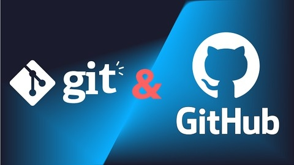

What is Full Stack Development? What are the skills required for Full Stack
Developer

Imagine a web application as a house. The front-end is the exterior you see – the
walls, windows,
and
doors. The back-end is the foundation, plumbing, and electrical system that keeps it running
smoothly. A full stack developer is like a skilled craftsman who can work on both the exterior
and
interior, ensuring the house is built to perfection.
In simpler terms, full stack developers are proficient in both front-end and back-end
development.
They can handle everything from designing the user interface (UI) and user experience (UX) to
managing the server and database. This comprehensive skill set makes them valuable assets in the
tech industry.
Key Skills of a Full Stack Developer
Front-End Development:
- HTML, CSS, and JavaScript: These are the fundamental building blocks of web
pages.
- Front-end Frameworks: React, Angular, or Vue.js are popular choices for
creating dynamic and interactive UIs.
- Responsive Design: Ensuring websites look and function well on different
devices (desktop, mobile, tablet).
Back-End Development:
- Programming Languages: Python, Ruby, or Node.js are commonly used for
server-side development.
- Databases: MySQL, PostgreSQL, MongoDB, or SQL Server are popular databases
for
storing and retrieving data.
- APIs: Creating and consuming APIs to enable communication between different
parts of the application.
Extra: Version control
Git: A popular version control system for managing code changes and collaborating with other
developers.
The Power of Effective Communication: Building Bridges, Fostering
Relationships, and Achieving
Success
Effective communication is the cornerstone of human interaction, whether it's in personal
relationships, professional settings, or even global affairs. It's the bridge that connects us,
the
tool that empowers us, and the catalyst that drives progress. In this digital age, where
information
flows freely and technology connects us across continents, the importance of effective
communication
has never been more pronounced.
Why Effective Communication Matters
- Building Relationships: Strong relationships are built on open, honest, and clear
communication. By expressing ourselves effectively, we can foster trust, understanding, and
empathy with others.
- Resolving Conflicts: Misunderstandings and conflicts often arise due to a breakdown
in
communication. When we communicate effectively, we can address issues proactively, find
common
ground, and resolve disputes peacefully.
- Influencing Others: Effective communication is essential for influencing others and
persuading them to adopt our ideas or take action. By presenting our thoughts clearly and
convincingly, we can inspire, motivate, and lead.
- Improving Collaboration: In today's interconnected world, collaboration is key to
success. Effective communication enables teams to work together harmoniously, share ideas,
and
achieve common goals.
- Boosting Productivity: Clear and concise communication can significantly improve
productivity in both personal and professional settings. When we understand each other's
expectations and requirements, we can avoid misunderstandings, reduce errors, and achieve
better
results.
- Personal Growth: Effective communication skills are essential for personal growth
and
development. By expressing ourselves confidently and articulately, we can build self-esteem,
improve our relationships, and achieve our goals.
What is Git?

Git is a popular version control system. It was created by Linus Torvalds in 2005, and has been
maintained by Junio Hamano since then.
It is used for:
(a)Tracking code changes
(b)Tracking who made changes
(c)Coding collaboration
GIT and GITHUB
- What does Git do?
- Manage projects with Repositories
- Clone a project to work on a local copy
- Control and track changes with Staging and Committing
- Branch and Merge to allow for work on different parts and versions of a project
- Pull the latest version of the project to a local copy
- Push local updates to the main project
- Working with Git:
- Initialize Git on a folder, making it a Repository
- Git now creates a hidden folder to keep track of changes in that folder
- When a file is changed, added or deleted, it is considered modified
- You select the modified files you want to Stage
- The Staged files are Committed, which prompts Git to store a permanent snapshot of
the files
- Git allows you to see the full history of every commit.
- You can revert back to any previous commit.
- Git does not store a separate copy of every file in every commit, but keeps track of
changes made in each commit!
- Working with Git:
- Initialize Git on a folder, making it a Repository
- Git now creates a hidden folder to keep track of changes in that folder
- When a file is changed, added or deleted, it is considered modified
- You select the modified files you want to Stage
- The Staged files are Committed, which prompts Git to store a permanent snapshot of
the files
- Git allows you to see the full history of every commit.
- You can revert back to any previous commit.
- Git does not store a separate copy of every file in every commit, but keeps track of
changes made in each commit!
- Why Git?
- Over 70% of developers use Git!
- Developers can work together from anywhere in the world.
- Developers can see the full history of the project.
- Developers can revert to earlier versions of a project.
- What is GitHub?
- Git is not the same as GitHub.
- GitHub makes tools that use Git.
- GitHub is the largest host of source code in the world, and has been owned by
Microsoft since 2018.
- In this tutorial, we will focus on using Git with GitHub.
Delhi tours with love: Announcing our “I Love Delhi tours”
Success
Delhi is the capital of India and one of the most historic cities on earth. The city is dotted
with monuments stretching back hundreds and even thousands of years. Delhi is also the cultural
and culinary capital of India, great for shopping, dining, and sightseeing. And it’s a very
green city, criss-crossed by wide, leafy boulevards. Personally, I think Delhi is a glorious
city. As well as being my home-away-from-home, I also find it inspiring and endlessly
fascinating. Like Rome, Delhi is an eternal city.
There are a lot of reasons to love Delhi, yet the city doesn’t always make a good first
impression and it doesn’t always have a good reputation with tourists.
We want to change that with our I Love Delhi Tours – based on our own fondness for the city.
Learning to love Delhi
When I first landed in India in 2005, I stayed in South Delhi, at the home of a friend. I was
lucky to have a soft landing and to stay with an Indian family. True Dilli-wallas, they helped
me see the beauty and essential charm of the city and provided the keys to discover hidden
treasures that most tourists miss. I grew to love the city and I hope you will give it a chance,
too.
Furthermore, most of the India for Beginners team – including Anjani and Ujjwal – are from
Delhi, and live in Delhi, and they have a wealth of knowledge they love to share.
We want to share our love for Delhi and show travellers the best Delhi has to offer.